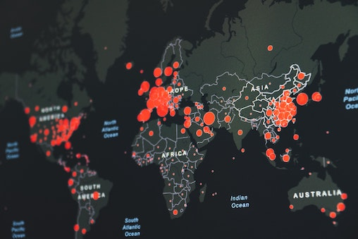

Here, you will be able to explore a collection of personal projects I have completed
with the ultimate goal of narrating the story concealed within the data.
Feel free to pour yourself a cup of coffee (or tea!), stay a while,
and see which story intrigues you the most.

Bellabeat, a high-tech manufacturer of health-based products, is focused on unlocking new growth opportunities for the company. While already successful,
Bellabeat strives to achieve even more; and believes an analysis of smart-device fitness data is the key to guiding marketing strategy. Utilizing RStudio, I uploaded, organized, and cleaned the fitness dataset provided by the company. From there, I then analyzed the data for insights, and producued visualizations within RStudio displaying my findings.
Throughout this project, I learned how to effectively clean and analyze data using R; along with the most effective ways to visually display my findings. With the tables, graphs, and charts I produced, I also made recommendations as to what measures Bellabeat could take in order to guide their marketing efforts.
In this project I tackled the challenge of cleaning housing datasets for the city of Nashville. The result of this project was transforming the dataset into a source that was more accessible for analysis.

The Covid-19 pandemic has radically changed the world as we know it. From the approaches we take in regards to healthcare, to how we operate in the workforce.
In this project, I performed an exploratory analysis to discover how Covid-19 affected countries around the world. By performing joins, calculations, CTE's, and more, I drew insights as to how Covid-19 moved throughout the world over the course of the last 2.5 years.

For this project, I utilized the data I analyzed in my Covid-19 Exploration project to visually display my insights in an interactive dashboard. Throughout this dashboard, information such as infection count by country, and the total death percentage worldwide, can be found.